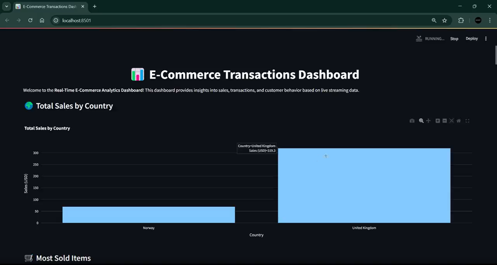

Featured Projects

Vigilix: Network Intrusion Detection System
- Developed a Network Intrusion Detection System (NIDS) using the UNSW-NB15 dataset, achieving 80%+ accuracy in intrusion detection.
- Evaluated ML models (XGBoost, Random Forest, Isolation Forest), with XGBoost achieving 87.95% accuracy, 85.35% precision, and 89.61% F1-score.
- Optimized XGBoost performance through hyperparameter tuning, improving accuracy by 13% and F1-score by 5.25%.
- Automated end-to-end workflow with Kafka, Prometheus, Grafana, and a custom dashboard, enabling 99.9% uptime.

IntelliTube – AI-Powered YouTube Insight Engine
- Developed end-to-end YouTube video analysis platform with 100% local execution
- Achieved 95% transcription accuracy using Faster Whisper
- Multilingual sentiment analysis with 89% accuracy
- Secure user authentication for 50+ concurrent users
- Question-Answering module leveraging FAISS vector search, MPNet embeddings, and an Ollama-powered Mistral LLM, achieving ~35% faster retrieval, 20–25% improved answer relevance, and significantly reduced hallucinations through recursive text-chunking and a grounded QA prompt.

ScriptSense: Personality Prediction
- Developed ScriptSense, a hybrid CNN-graphology tool predicting Big Five personality traits from handwriting images using TensorFlow/Keras and OpenCV for feature extraction.
- Integrated CNN predictions with graphology rules to generate combined, confidence-scored trait insights.
- Predicts introversion/extroversion, emotional stability
- Deployed on Hugging Face Spaces

Predictive Analysis of Stress Based on Vital Physiological Metrics
- Built a real-time stress detection system using wearable data, improving response accuracy by 25%.
- Tracked 4+ key metrics: heart rate, EDA, body temperature, and breathing rate.
- Trained and tested 5+ ML models; selected one with 92% accuracy.
- Fine-tuned model parameters, boosting prediction precision by 15%.
- Deployed model to app, delivering stress scores on a 0–100 scale.

Academic Dashboard Mtech Students
- Collected and preprocessed academic and demographic data for 44 M.Tech students, ensuring 100% data accuracy through thorough cleaning and validation techniques.
- Analyzed data to extract key insights, leading to improved visualization strategies and highlighting trends in academic performance and participation.
- Designed and implemented over 10 interactive visualizations using tools like Matplotlib and Plotly to represent student metrics on a user-friendly dashboard.
- Deployed the dashboard on Streamlit Cloud, achieving seamless access and reducing manual reporting efforts by over 80%.

StreamPulse : Real-Time E-Commerce Transactions Dashboard
- Built real-time e-commerce transaction monitoring system using Kafka + Spark Structured Streaming + Streamlit, processing 1,000+ events/min with <2s latency.
- Implemented end-to-end streaming pipeline: Kafka producer simulating e-commerce events → Spark job for data cleansing and aggregation → live-updating Plotly dashboard with dark theme.
- Built 8+ interactive visualizations showing real-time revenue, transactions per minute, top products, Total Sales by country , and customer geographic distribution using PySpark and Streamlit.